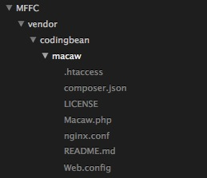
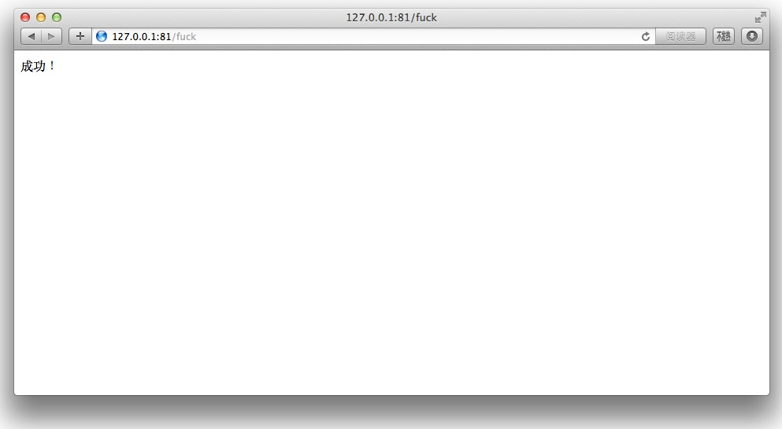

利用 Composer 一步一步构建自己的 PHP 框架（二）——构建路由
本教程示例代码见 https://github.com/johnlui/My-First-Framework-based-on-Composer
上一篇中我们已经建立了一个空的 Composer 项目，本篇将讲述如何构建路由。
久负盛名的 CodeIgniter 框架是很多人的 PHP 开发入门框架，同样也是我开始学习如何从头构建一个网站的框架。在 CI 中我学到了很多，其中对 MVC 的深入理解和对框架本质的理解对我的影响最大。从使用框架是为了提高开发效率的角度来看，框架的本质就是路由。
下面我们就开始自己来构建路由，先去 GitHub 搜一下：点此查看搜索结果
推荐 https://github.com/NoahBuscher/Macaw，对应的 Composer 包为 noahbuscher/macaw 。
下面开始安装它，更改 composer.json：
{
"require": {
"noahbuscher/macaw": "dev-master"
}
}运行 composer update，成功之后将得到以下目录：

至此，Macaw 包安装成功！
下面，就是见证奇迹的时刻！我们将赋予 MFFC 生命力，让它真正地跑起来！
新建 MFFC/public 文件夹，这个文件夹将是用户唯一可见的部分。在文件夹下新建 index.php 文件：
<?php // Autoload 自动载入 require '../vendor/autoload.php'; // 路由配置 require '../config/routes.php';
上面一行表示引入 Composer 的自动载入功能，下面一行表示载入路由配置文件。新建 MFFC/config 文件夹，在里面新建 routs.php 文件，内容如下：
<?php
use NoahBuscher\Macaw\Macaw;
Macaw::get('fuck', function() {
echo "成功！";
});
Macaw::get('(:all)', function($fu) {
echo '未匹配到路由<br>'.$fu;
});
Macaw::dispatch();
Macaw 的文档位于 https://github.com/NoahBuscher/Macaw，请按照你的 HTTP 服务软件类型自行设置伪静态，其实跟绝大多数框架一样：“将所有非静态文件全部指向 index.php”。
然后，将某一个端口用 Apache 或 Nginx 分配给 MFFC/public 目录，这一步十分建议用 Apache 或者 Nginx 做。
如果使用 PHP 内置 HTTP 服务器：
cd public && php -S 127.0.0.1:3000
将导致路由的 Macaw::get('fuck' 必须写成 Macaw::get('/fuck' 才能响应。
目前的代码使用 Apache + mod_php 和 Nginx + php-fpm 方式均没有问题。
我在本地绑定了 81 端口，访问 http://127.0.0.1:81/fuck 可以看到：

如果页面乱码，请调整编码为 UTF-8。如果你成功看到以上页面，那么恭喜你，路由配置成功！
Macaw 只有一个文件，去除空行总共也就一百行多一点，通过代码我们能直接看明白它是怎么工作的。下面我简略分析一下：
1. Composer 的自动加载在每次 URL 驱动 MFFC/public/index.php 之后会在内存中维护一个全量命名空间类名到文件名的数组，这样当我们在代码中使用某个类的时候，将自动载入该类所在的文件。
2. 我们在路由文件中载入了 Macaw 类：“use NoahBuscher\Macaw\Macaw;”，接着调用了两次静态方法 ::get()，这个方法是不存在的，将由 MFFC/vendor/codingbean/macaw/Macaw.php 中的 __callstatic() 接管。
3. 这个函数接受两个参数，$method 和 $params，前者是具体的 function 名称，在这里就是 get，后者是这次调用传递的参数，即 Macaw::get('fuck',function(){...}) 中的两个参数。第一个参数是我们想要监听的 URL 值，第二个参数是一个 PHP 闭包，作为回调，代表 URL 匹配成功后我们想要做的事情。
4. __callstatic() 做的事情也很简单，分别将目标URL（即 /fuck）、HTTP方法（即 GET）和回调代码压入 $routes、$methods 和 $callbacks 三个 Macaw 类的静态成员变量（数组）中。
5. 路由文件最后一行的 Macaw::dispatch(); 方法才是真正处理当前 URL 的地方。能直接匹配到的会直接调用回调，不能直接匹配到的将利用正则进行匹配。
下一步：利用 Composer 一步一步构建自己的 PHP 框架（三）——设计 MVC
评论：
2016-05-21 15:11
server {
listen 8088;
server_name localhost;
root D:/nginx/html/MFFC/public;
autoindex off;
location / {
try_files $uri $uri/ /index.php?/$uri;
}
error_page 500 502 503 504 /50x.html;
location = /50x.html {
root html;
}
location ~ \.php$ {
fastcgi_pass 127.0.0.1:9000;
fastcgi_index index.php;
fastcgi_param SCRIPT_FILENAME $document_root$fastcgi_script_name;
include fastcgi_params;
}
}
2016-05-20 15:58
D:\phpStudy\WWW\laravel>composer update
> php artisan clear-compiled
Loading composer repositories with package information
Updating dependencies (including require-dev)
Your requirements could not be resolved to an installable set of packages.
Problem 1
- Installation request for intervention/image 2.0.15 -> satisfiable by inter
vention/image[2.0.15].
- intervention/image 2.0.15 requires ext-fileinfo * -> the requested PHP ext
ension fileinfo is missing from your system.
To enable extensions, verify that they are enabled in those .ini files:
- D:\phpStudy\php55\php.ini
You can also run `php --ini` inside terminal to see which files are used by PH
P in CLI mode.
2016-03-08 22:30
引入autoload.php后 用 use xxxx ;初始化类时说 找不到类
为什么？
手动下载不行么，怎么能自动载入
2015-12-15 22:21
2016-06-23 02:09
Macaw::get('fuck', function() {
echo "成功！";
});
Macaw::get('/', function() {
echo 'Hello world!';
});
Macaw::get('/aa', function() {
echo 'aa';
});
Macaw::get('(:all)', function($fu) {
echo '未匹配到路由<br>'.$fu;
});
打开 我自己配置的域名 jenchih.com 显示为匹配到路由
如果打开 jenchih.com/index.php 就显示 为匹配到路由 index.php
加上/fuck 什么的 都是404 - -？
2015-11-24 00:31
 。求大神帮忙研究下
。求大神帮忙研究下2015-08-21 14:43
404
大神出现了这个问题该怎样解决呢

2015-09-16 13:51
1. 先把routes.php的
Macaw::get('fuck',function(){
echo 'fuck';
});
Macaw::get('(:all)', function($fu) {
echo 'not match route</br>'.$fu;
});
替换为：
Macaw::get('/fuck',function(){
echo 'fuck';
});
Macaw::get('/(:all)', function($fu) {
echo 'not match route</br>'.$fu;
});
这时报错没有了，但是访问 /fuck路径时 ‘not match route’ 字符串也会输出；
2. 根据站长发布的TinyLara框架的TinyRouter.php 文件，把 vendor/noahbuscher/macaw/Macaw.php 文件做了调整：
__callstatic($method, $params) 方法中， $uri = $params[0];；
dispatch() 方法中： $uri = self::detect_uri();
添加了
private static function detect_uri()
{
$uri = $_SERVER['REQUEST_URI'];
if (strpos($uri, $_SERVER['SCRIPT_NAME']) === 0) {
$uri = substr($uri, strlen($_SERVER['SCRIPT_NAME']));
} elseif (strpos($uri, dirname($_SERVER['SCRIPT_NAME'])) === 0) {
$uri = substr($uri, strlen(dirname($_SERVER['SCRIPT_NAME'])));
}
if ($uri == '/' || empty($uri)) {
return '/';
}
$uri = parse_url($uri, PHP_URL_PATH);
return str_replace(array('//', '../'), '/', trim($uri, '/'));
}
这时routes.php文件中的路由：
Macaw::get('fuck',function(){
echo 'success';
});
Macaw::get('(:all)', function($fu) {
echo 'not match route</br>'.$fu;
});
访问正常了，不用添加 ‘/ ’ 了
2015-08-20 18:06
echo 'Img server';
});
那 $uri = /index.php/foo
我是开启apache重写的， .htaccess文件内容如下
<IfModule mod_rewrite.c>
Options +FollowSymlinks
RewriteEngine On
RewriteCond %{REQUEST_FILENAME} !-d
RewriteCond %{REQUEST_FILENAME} !-f
RewriteRule ^(.*)$ index.php/$1 [QSA,PT,L]
</IfModule>
如果我访问的路径是 myhost.com/foo , 那么Macaw 中dispatch 里 $uri = parse_url($_SERVER['REQUEST_URI'], PHP_URL_PATH); 这里的$uri = /foo ， 这就导致 没法匹配到路由 （因为上面实际是 index.php/foo)
是因为我的重写有问题吗？ （Apache/2.4.4 (Win32) PHP/5.4.16）
2015-08-14 09:05
2015-06-19 16:04
Your requirements could not be resolved to an installable set of packages.
Problem 1
- intervention/image 2.2.2 requires ext-fileinfo * -> the requested PHP exte
nsion fileinfo is missing from your system.
- intervention/image 2.2.1 requires ext-fileinfo * -> the requested PHP exte
nsion fileinfo is missing from your system.
- intervention/image 2.2.0 requires ext-fileinfo * -> the requested PHP exte
nsion fileinfo is missing from your system.
- Installation request for intervention/image ^2.2 -> satisfiable by interve
ntion/image[2.2.0, 2.2.1, 2.2.2].
2015-06-18 14:30
[root@localhost public]# pwd
/var/www/html/public
[root@localhost public]# ls -a
. .. .htaccess index.php
[root@localhost public]# cat .htaccess
<IfModule mod_rewrite.c>
Options +FollowSymlinks
RewriteEngine On
RewriteCond %{REQUEST_FILENAME} !-d
RewriteCond %{REQUEST_FILENAME} !-f
RewriteRule ^(.*)$ index.php/$1 [QSA,PT,L]
</IfModule>
[root@localhost public]# cd ../config/
[root@localhost config]# ls
routes.php
[root@localhost config]# cat routes.php
<?php
use NoahBuscher\Macaw\Macaw;
Macaw::get('/fuck',function(){
echo "Hello world!";
});
Macaw::get('(:all)',function($fu){
echo "未匹配到路由<br>".$fu;
});
Macaw::dispatch();
按大神说的不管我加不加/在fuck前面访问都是404,不知道是那里写错了?
2015-06-18 15:59
现在的情况是我访问
http://192.168.154.132/fuck或者http://192.168.154.132/index.php/fuck的时候都会走all那个路由
use NoahBuscher\Macaw\Macaw;
Macaw::get('fuck',function($fu){
echo "Hello world!---".$fu;
});
Macaw::get('(:all)',function($fu){
echo "未匹配到路由<br>".$fu;
});
Macaw::dispatch();
未匹配到路由
/index.php/fuck
未匹配到路由
/fuck
不知道哪里还要进行相关的配置那？
2016-01-03 13:18
利用节日期间，调试了一下，发现Macaw处理URL的时候可以匹配到`/index.php/fuck'`却不能匹配到 `/fuck`，原因是`_SERVER['PHP_SELF']` 获取到的数据是 `/index.php/fuck` 所以才会这样，经查看_SERVER变量，发现其实是_SERVER['PHP_SELF'] 是 `_SERVER['SCRIPT_NAME']` 和 `_SERVER['REQUEST_URI']` 的拼装，所以应该是 _SERVER['REQUEST_URI'] 就ok了。现在动手改掉
$uri = dirname($_SERVER['PHP_SELF']).$params[0];
为
$uri = dirname($_SERVER['REQUEST_URI']).$params[0];
搞定！一切运行正常。另，怎样才不算垃圾评论？
2015-06-05 16:40
Object not found!
The requested URL was not found on this server. If you entered the URL manually please check your spelling and try again.
If you think this is a server error, please contact the webmaster.
Error 404
127.0.0.1
Apache/2.4.12 (Win32) OpenSSL/1.0.1l PHP/5.6.8
<?php
use NoahBuscher\Macaw\Macaw;
Macaw::get('fuck', function() {
echo "成功！";
});
Macaw::get('/', function() {
echo 'Hello world!';
});
Macaw::get('/test', function() {
echo "成功！";
});
Macaw::dispatch();
但是http://127.0.0.1:81/ 这个路由可以显示Hello world!
2015-05-04 17:08
每次用vim打开都会提示这个。。 这个是怎么回事?
2015-04-09 17:57
2015-04-09 19:47

 用 Apache怎么做，能不能说一下具体步骤 谢啦 大侠
用 Apache怎么做，能不能说一下具体步骤 谢啦 大侠2015-04-09 21:30
"然后，将某一个端口用 Apache 或 Nginx 分配给 MFFC/public 目录，这一步十分建议用 Apache 或者 Nginx 做。"
2015-04-10 15:12
Macaw::get('/', function() {
echo "fuck！";
});
Macaw::get('/fuck', function() {
echo "fuck！";
});
但是第一条路由成功，第二条路由失败 提示“Internal Server Error The server encountered an internal error or misconfiguration and was unable to complete your request.”这样信息，然后我把'/'去掉，还是不行，望大侠指点


2015-03-27 11:27
Object not found!
The requested URL was not found on this server. If you entered the URL manually please check your spelling and try again.
If you think this is a server error, please contact the webmaster.
Error 404
<?php
use NoahBuscher\Macaw\Macaw;
Macaw::get('/', function() {
echo 'Hello world!';
});
Macaw::get('/test', function() {
echo "成功！";
});
Macaw::get('(:all)', function($fu) {
echo '未匹配到路由<br>'.$fu;
});
Macaw::dispatch();

2016-07-06 11:20